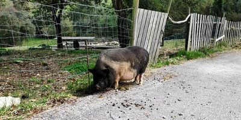

In the first quarter of 2019 I went hiking in Spain, again - because, as it turned out, hiking is one of my favorite activities. I recently had a look at the photos I took during my trip. One was particularly interesting to me. Not due to
its beauty, but because of the connections to us humans that can be established if one looks closely and with a bit of imagination ...

A pig: fat, sluggish and on the "wrong" side of the fence, in freedom, but was it free? At least it didn't do anything that´d suggest it. Of course, it knows not of our ways to think in boxes, knows not of captivity and freedom, it just does
what it always does, no matter where, autopilot anywhere. This, however, is not about that pig, but about me in particular and peoples in general and how we let our life pass us by while being in autopilot.
For about nine years I had the freedom to go where I wanted to, to do what may had pleased me. Instead, I stayed in my comfort zone so I needn't see outside the box, that was - to me - the place where danger lurked.
Initially, my comfort zone included my workplace, my home and my supermarket of trust, as well as the connecting routes. By the end of these nine years, it had shrunk to "home". Leaving the apartment had become more and more a frightening
feat.
I am happy to report that I am much better these days and regularly force myself to do activities that may seem impossible to me at the moment, just to leave the comfort zone and realize that the danger is just in my mind.
My situation is definitely an extreme case, but day after day I meet people in my immediate vicinity who move through life in comparable patterns. I'm talking about people who belong, as far as I am concerned, in the “normal-people-box”, because
they seem “normal” and do “normal” stuff. People who have been driving the same way, to the same job, every morning, for 30 years. People who say things like, "I've been working in this company for 40 years!", people who believe that that´s
what life is about, because that's what you do and it has been done like that for ages ...
Doing things because "that's just what you do" , I started to turn away from after I hit rock bottom, which, I believe today, happened - at least in part - because I tried to go with the flow and fit in despite my aversions to their
values, however at the time I had no real idea what an alternative could look like. I had given conformity a chance simply because I didn't know better. The whole thing had an interesting effect: Although I was among people (people need
other people I was told), people I even liked, and did activities that "one just does" . Never in my entire life up to that point have I ever felt so lonely and excluded like at that time, between all the nice people. It really
wrecked me and at the time it reinforced my belief that i´d be "worth nothing" and I simply did "not deserve to be happy".
Meanwhile, my point of view has changed fundamentally. I no longer believe that I, or anyone for that matter, "deserves happiness". Evidence suggests that it is much more a by-product of the decisions I make, instead of waiting for change
to magically occur. I no longer try to belong. Instead I come up with values or goals which appear to be worth pursuing. It's my life! Nobody but me needs to like it, in case someone does however I will try to be a positive example.
Unfortunately, my plans for 2020, like many people's, were thwarted by the Corona virus. So I will be heading into the second round of the endurance competition, which is everyday work life, with the goal of postponing forged plans by exactly
one year (damn you, seasons). And then I´ll be off hiking, until I´ll find myself again at the end of the money, and the process starts over. A year is a good time frame to improve as a writer and to pursue my increasingly diverse interests.
"That sounds like a lot of work! Why the hassle? And nobody reads this anyway!” So why do I do what I do? When my time is near and the reaper comes for me and my life passes before my eyes (as it is supposed to happen, right?), I´d like to
be able to say, “Well done! It looked really grim but you managed to change for the better. It didn't go all smoothly, you were forced to compromise, but in the end you lived your life the way you decided, no matter how crazy or unconventional
the plans were. You tried to be the best person you could be, in the given situation, instead of pissing the world off with your nihilism!” AND because I know what this passive, autopilot consumer life holds for me. It is a place I do
not with to return to!
Flip your life upside down and while your at it apply some structure to it! But why is it so hard?
So, I hadn't killed myself and as a result of this I started to ask myself: Can I lead a life worth living and if so how?
Psychologists, authors and coaches seem to agree, that daily structure is a crucial point in terms of betterment, on the subject of depression. So, not unlike my timetable from back in the day when I was at school, I put together a list and
applied some structure to my days. A lot of adjustments have been made in the past two and a half years and I still believe there to be more room for future ones. Small side note: I have been better ever since. Before we take a closer
look at what I came up with, let's have a glimpse at my approximate daily routine when I was at my lowest point and find out (at least partially) how it could get this far:
Sleep until it's time to go to work.
Work (meh)
Consumption of pornography and video games
Repeat!
I don't think video games are fundamentally bad, they taught me English after all. Pornography probably is, but I haven't investigated thoroughly, hence the word "probably"! As with many things used recreationally, it is important to recognize
whether you are in control or whether they control you. For years the latter was the case with me, which meant that in many ways I made no progress (at all).
I secretly think we know what's good for us and what's not. We just don't want to admit that habit x is a problem, we got used to it, started to identify with it. If we can admit it to ourselves however, there is another hurdle: To abandon
such behaviour, which we have often practiced for months or even years, and to fill it with something that suits us, maybe even brings us actual joy. In my attempt to explain why this seems to us like an insurmountable obstacle, I have
to go on a tangent real quick.
We live in a time where we can get everything right away. Ordered stuff on Amazon? The next day the parcel carrier rings! Would you like a film? Netflix knows all the movies and at all times. Bored? There's a computer in your Pocket which
can provide novelty at the click of a button, whenever you feel like it. The subject of dopamine addiction, however, deserves its own entry.
We are conditioned to want everything right away, which can be a problem when trying to replace an old, "bad" habit with a new, "good" one. Change does not occur immediately, but takes time. Well, that's exactly what I don't have! I want my
happiness(/instant gratification) now! And I can have it now, see there is one of those red dots next to the Facebook app-icon on my phone, let me just take a look ...
... sorry I'm back! I just had to look at a thing. Where was I? Oh yes, the change does not occur immediately and I can only have my pleasure stimulus later, like in that scientific study with the children and the marshmallows, which I might
come back to in a later post, if I have figured out how to put together a fold-out button for the sources by then. Well, I cannot be happy right now because I am learning something new, which I suck at, it is only logical that I suck at
it because I have never done it before. Concentration diminishes and suddenly there is this voice in your head: “Of course this wasn´t gonna work out! You are such a no good! I told you before: It's a stupid idea. It just doesn't lead to anything!
You have been practicing ukulele for 30 minutes now and cannot even play "Somewhere over the Rainbow"! Why don't we watch what's new on Youtube instead?", this being the non-adult-rated version of her talk.
The voice is a liar, that much is clear to me by now. and it is of enormous importance that we recognize when she does this to be able to respond and to reason with her: “Ah there you are again! Was nice when you just gave it a rest. It may
be true that I have not had any notable successes so far, but it does not have to stay that way. Einstein had nothing to show for 15 years and I'm just getting started. We both know where it will go if we engage in your suggestions! Maybe
we do your suggestions later?!”, or something similar. The knowledge of my abyss and what kind of a place it is motivates me immensely not to fall back into old patterns - though it happens!
Pro-Tip: Don't give in to your cravings instead suggest: “Let's do it in 10 minutes!”, 10 minutes later I've often forgotten it!
Now let's take a look at my new daily routine that I came up with:
Get up early
Meditation
Bodyweight exercises
Short Spanish exercise on Duolingo
Learn programming (this blog is my first project)
Go to work (unfortunately still meh, but less)
Read or program some more
Second Spanish exercise
Go to bed early
Not gonna lie! It is often hard and on approximately 7/7 days I don't feel like doing the sport part. But on about 5/7 days I (usually) do it anyway and the voice is always there and tries to keep me away. If I have a lot of time, e.g. on
the weekends ,I often go out into nature and/or read a book on a topic that interests me (psychology / Stoic philosophy/ Buddhism / programming). It works really well as long as I am busy enough and focus on a (positive) activity, the
voice has a break and at the end of the day I feel good and hopefully have learned something new. Sure, she is silent as well when I obey the order/suggestion, but for doing so I get nothing but ridicule, mockery and everything goes downhill
again.
Finally, a few encouraging quotes that fit the topic:
We are what we repeatedly do. Excellence, then, is not an act, but a habit. - Will Durant
Whether you think you can, or you think you can't--you're right. - Henry Ford
If you always do what you’ve always done, you’ll always get what you’ve always got. - Henry Ford
The best time to plant a tree was 20 years ago. The second best time is now. - Chinese proverb